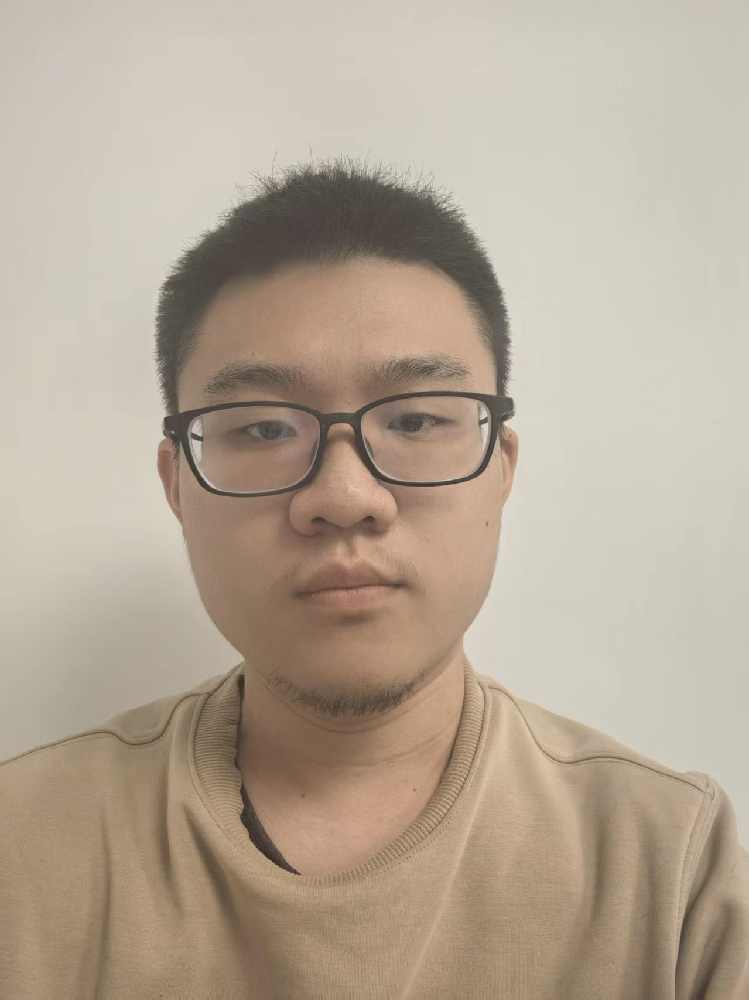

Here is Jiangnan. I am now a graduate student in the Department of Mathematics at Peking University under the supervision of Professor Ruochuan Liu.
My research interests lie in higher categories and algebraic geometry, with an emphasis on geometric ramification.
Email: 2401110029 at stu dot pku dot edu dot cn
Peking University
School of Mathematical Sciences
Additivity of non-acyclicity classes for constructible \'etale sheaves. Available at arxiv:2505.24345
Singular supports, characteristic cycles, and microlocalization of constructible sheaves. Available at arxiv:2609.06625